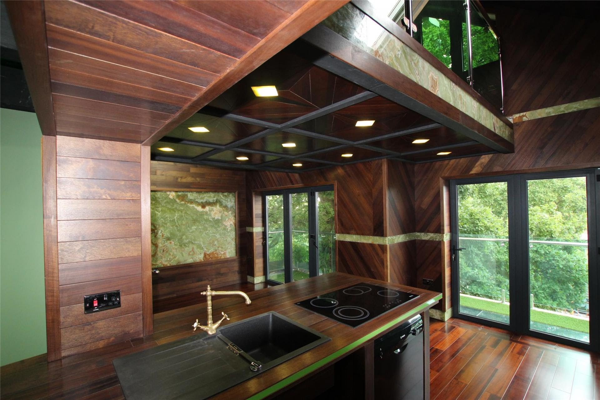

Crafting excellence in architectural joinery for over three decades.

N Joinery is a specialist workshop dedicated to high-end architectural joinery and bespoke fitted furniture. With decades of experience, we create exceptional custom pieces that combine superior craftsmanship with innovative design.
Every project begins with a deep understanding of our client's vision. We work closely with architects, interior designers, and homeowners to deliver joinery solutions that exceed expectations - from luxury kitchens and fitted libraries to church doors and intricate timber inlays.
Every commission follows a proven process to ensure exceptional results.
We begin with a detailed conversation about your space, requirements, and design preferences.
Our team develops detailed designs, selects materials, and presents options for your approval.
Every piece is meticulously crafted in our workshop using traditional techniques and modern precision.
Professional installation ensures a perfect fit, with final adjustments made on-site to your satisfaction.